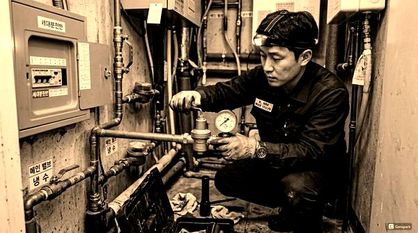
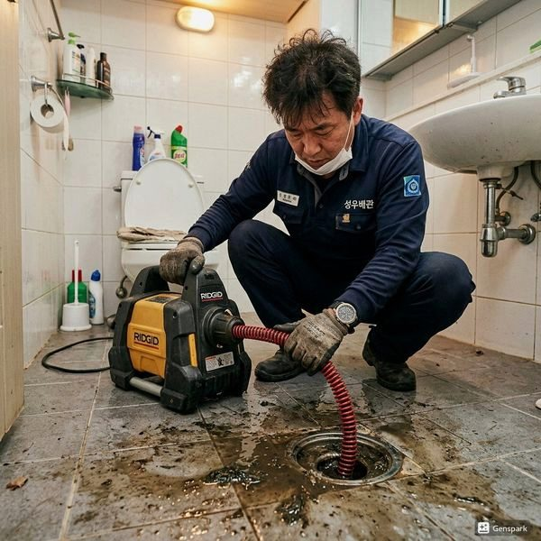
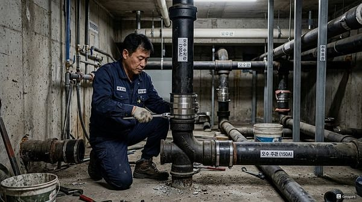

화장실 변기 물내림 약할 때 원인과 해결법
2026년 4월 12일 | 제우스시설관리

변기 물내림이 약해지면 일상생활에 큰 불편을 줍니다. 한 번에 깨끗하게 내려가지 않아 여러 번 레버를 눌러야 하고, 결국 변기 막힘으로 이어지는 경우도 많습니다. 이 문제는 여러 원인이 복합적으로 작용합니다.
가장 흔한 원인은 변기 테두리 구멍의 막힘입니다. 변기 안쪽 테두리에는 작은 구멍들이 있어 물이 소용돌이치며 내려갑니다. 이 구멍에 석회질이나 물때가 쌓이면 물의 흐름이 약해집니다. 거울을 이용해 테두리 아래를 확인하고, 막힌 구멍은 가는 철사로 뚫어줄 수 있습니다.

두 번째 원인은 수조 내부 부품 고장입니다. 플래퍼 밸브가 열화되면 물이 새어나가 수조에 충분한 물이 차지 않습니다. 볼탭(부구)이 고장나면 적정 수위까지 물이 차지 않아 물내림이 약해집니다.
세 번째 원인은 배관 부분 막힘입니다. 완전히 막히지는 않았지만 배관 내부가 좁아져 배수 속도가 느려지는 것입니다. 이 경우 드레인 기계나 고압세척기로 배관을 정비해야 합니다.

제우스시설관리는 변기 문제를 정확하게 진단하고 해결합니다. 내시경 카메라로 배관 내부 상태를 확인하여 원인을 정확히 파악한 후 적합한 방법으로 처리합니다. 단순 부품 교체부터 배관 세척까지, 28분 내 출동하여 신속하게 해결합니다. 전화: 010-4406-1788